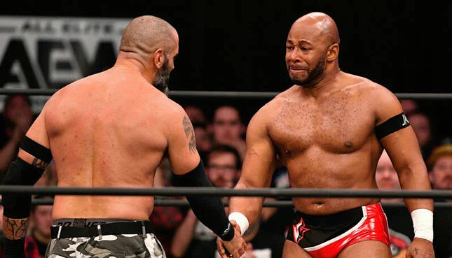

Professional Wrestling is a Sport of Heroes
05.24.26
Professional wrestling is a sport of heroes.
Every time I go to a wrestling show I cry. I don’t cry because it’s sad, I cry for what it means to me. I cry when I see heroes in the flesh, because it makes me realize how just a short couple years ago, professional wrestling saved my life. When I wanted nothing more than to not wake up, I held on because AEW was on Wednesday and I had to be there.
Professional wrestling is full of its fair share of incredible stories. Some fantastical and fabricated, but those just as real as mine and yours as well. People like Jon Moxley, like Mark Briscoe, like Katsuyori Shibata, like Mitsuharu Misawa, like Bryan Danielson, like Eddie Kingston. People who have faced, embraced, fought and survived death. Real genuine heroes. People who’ve shown me over time that it’s okay to be alive, that it’s okay to be you, and that it’s okay to cry.
Because for just as much as pro wrestling is remembered for its highs, its stories are shaped by its lows. Stories of failure and torment. Stories about fighting demons, about climbing mountaintops, about being you, about believing in you, about fighting for what’s right, about fighting for what you love.
Because professional wrestling will always be Earth’s greatest artform.
Professional wrestling is what I love. Professional wrestling is special. It fills me with life. It’s stupid, dangerous, goofy, and everything in between, but fuck, how can’t you love it.
Who knows if I’d be here today without pro wrestling, but thankfully I am here. Here for days like today. For days where I get to come here and surround myself with this beautiful community and look my heroes in the eyes. And realize that heroes aren’t people created in stories, heroes are people forged in the trenches of everyday life. People who continue to choose to live on. To be themselves. To die for what they love. And to give us all something to smile about.
Because a hero isn’t someone who can fly or turn invisible. A hero is someone who slays their demons. A hero is someone who survives loss and continues to carry the flag. A hero is someone who faces death but fights back to do the thing they love. A hero is someone who dies for what they believe in most. A hero is someone who fights for their dreams to see their dreams fight for them. A hero is someone who gives the hopeless children a reason to keep living.
A hero is a simple man.
And how lucky am I to have found this beautiful hobby and be surrounded by them at all times.
So thank you to pro wrestling. Thank you to the heroes who’ve taught me how to live. To the heroes who have unknowingly saved me time and time again. To the people who make this possible, to the community that loves it with me, and to all of you who continue to support me.
I love professional wrestling.
Current Status:
Loading...